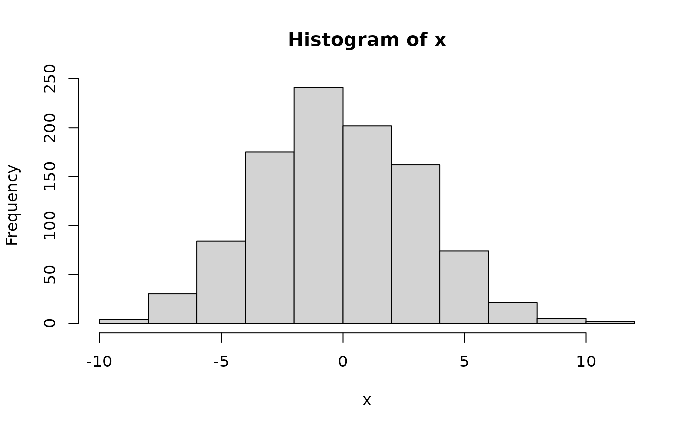

A wrapper of random number generator.
Arguments
- fn
random number generator, e.g., rnorm, rchisq, etc. It can be user-defined random number generator as well, e.g., PiecewiseConstantExponentialRNG
- ...
arguments for
fn. Specifying invalid arguments can trigger error and be stopped. There are three exceptions. (1)rngcan be passed through `...` to give true name offn. This could be necessary as it may be hard to parse it accurately inDynamicRNGFunction, or simply for a more informative purpose in some scenarios. (2)var_namecan be passed through `...` to specify the name of generated variable. (3)simplifycan be set to FALSE to convert a vector into a one-column data frame in returned object. This happens for built-in random number generators, e.g.,rnorm,rbinom, etc. These three arguments will not be passed intofn.
Value
a function to generate random number based on `fn` and arguments in `...`. Specified arguments will be fixed and cannot be changed when invoking `DynamicRNGFunction(fn, ...)()`. For example, if `foo <- DynamicRNGFunction(rnorm, sd = 2)`, then `foo(n = 100)` will always generate data from normal distribution of variance 4. `foo(n = 100, sd = 1)` will trigger an error. However, if an argument is not specified in `DynamicRNGFunction`, then it can be specified later. For example, `foo(n = 100, mean = -1)` will generate data from N(-1, 4).
Examples
# example code
dfunc <- DynamicRNGFunction(rnorm, sd = 3.2)
x <- dfunc(1e3)
hist(x)
